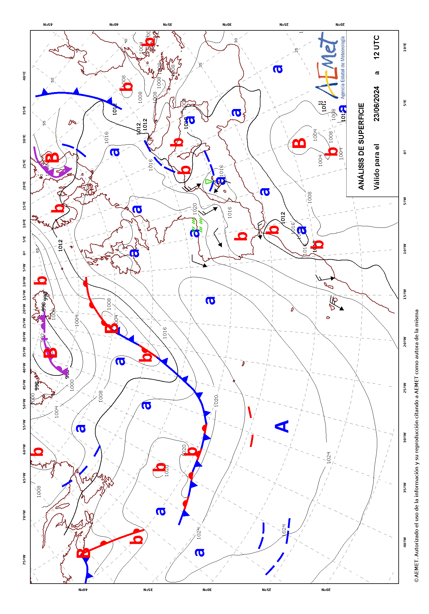

climaemet provides several functions for accessing a selection of endpoints of the AEMET API tool. However, this package does not cover in full all the capabilities of the API.
For that reason, we provide the get_data_aemet()
function, that allows to access any API endpoint freely. The drawback is
that the user would need to handle the results by him/herself.
Example: Normalized text
Some API endpoints, as predicciones-normalizadas-texto, provides the results as plain text on natural language. These results are not parsed by climaemet, but can be retrieved as this:
# endpoint, today forecast
today <- "/api/prediccion/nacional/hoy"
# Metadata
knitr::kable(get_metadata_aemet(today))| unidad_generadora | descripcion | periodicidad | formato | copyright | notaLegal |
|---|---|---|---|---|---|
| Grupo Funcional de Predicción de Referencia | Predicción general nacional para hoy / mañana / pasado mañana / medio plazo (tercer y cuarto día) / tendencia (del quinto al noveno día) | Disponibilidad. Para hoy, solo se confecciona si hay cambios significativos. Para mañana y pasado mañana diaria a las 15:00 h.o.p.. Para el medio plazo diaria a las 16:00 h.o.p.. La tendencia, diaria a las 18:30 h.o.p. | ascii/txt | © AEMET. Autorizado el uso de la información y su reproducción citando a AEMET como autora de la misma. | https://www.aemet.es/es/nota_legal |
# Data
pred_today <- get_data_aemet(today)
#>
#> Returning raw results. MIME type: text/plain
# Produce a result
clean <- gsub("\r", "\n", pred_today, fixed = TRUE)
clean <- gsub("\n\n\n", "\n", clean, fixed = TRUE)
cat(paste("---\n\n", clean, "\n---"))AGENCIA ESTATAL DE METEOROLOGÍA PREDICCIÓN GENERAL PARA ESPAÑA DÍA 08 DE FEBRERO DE 2023 A LAS 09:03 HORA OFICIAL PREDICCIÓN VÁLIDA PARA EL MIÉRCOLES 8
A.- FENÓMENOS SIGNIFICATIVOS Precipitaciones localmente fuertes o persistentes en el sur de Cataluña, comunidad Valenciana, Baleares, suroeste de Andalucía, área del Estrecho y Málaga. Nevadas en zonas montañosas del este peninsular. Intervalos de viento fuerte en la mitad norte del litoral mediterráneo, Baleares y costa norte de Galicia. Heladas localmente fuertes en Pirineos.
B.- PREDICCIÓN Continuará la inestabilidad favorecida por un flujo del este, que producirá cielos nubosos y chubascos en el área mediterránea. Podrán ser localmente fuertes o persistentes y con tormentas en el sur de Cataluña, comunidad Valenciana, Baleares, suroeste de Andalucía, área del Estrecho y Málaga. Intervalos nubosos en el resto de la Península, con posibilidad de algunos chubascos de carácter más débil, salvo poco nuboso en el norte Galicia y Cantábrico. En Canarias, intervalos nubosos y probables chubascos ocasionales en las islas de mayor relieve, sin descartarlos en las islas más orientales.
Cotas de nieve: 600/800 m en el noreste peninsular, 800/1200 m en el centro y Baleares, y 1100/1500 m en el sur.
Las temperaturas tendrán en general un ascenso en la Península, salvo en zonas de la Comunidad Valenciana, sur del Ibérico y este de la meseta Sur, donde descenderán las diurnas. Se darán heladas en el interior de la mitad norte peninsular y sierras del sureste, más intensas en montañas, llegando a ser fuertes en Pirineos.
Predominio de vientos de componente este en la Península y Baleares, con intervalos fuertes en la mitad norte del litoral mediterráneo, Baleares y costa norte de Galicia. En Canarias, flojos predominando la componente norte.
Example: Maps
AEMET also provides map data, usually on image/gif
format. One way to get this kind of data is as follows:
# Endpoint of a map
a_map <- "/api/mapasygraficos/analisis"
# Metadata
knitr::kable(get_metadata_aemet(a_map))| unidad_generadora | descripción | periodicidad | formato | copyright | notaLegal |
|---|---|---|---|---|---|
| Grupo Funcional de Jefes de Turno | Mapas de análisis de frentes en superficie | Dos veces al día, a las 02:00 y 14:00 h.o.p. en invierno y a las 03:00 y 15:00 en verano. | image/gif | © AEMET. Autorizado el uso de la información y su reproducción citando a AEMET como autora de la misma. | https://www.aemet.es/es/nota_legal |
the_map <- get_data_aemet(a_map)
#>
#> Returning raw results. MIME type: image/gif
# Write as gif and include it
giffile <- "example-gif.gif"
writeBin(the_map, giffile)
# Display on the vignette
knitr::include_graphics(giffile)